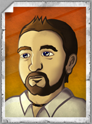
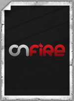

About Me : The Designer / Developer
I started my design career early in my life, drawing every chance I got. Being an artist is a large part of my life as a career and personal hobby. I realized I wanted to be a graphic designer early in high school. I decided to take every art and development class that was available to me to get as much experience as I could to prepare myself for college. After high school I went college hunting and decided to plant myself at Robert Morris University in the heart of downtown Pittsburgh. I finished my four year degree with a Bachelor of Fine Arts with a concentration in web design and development. During college I got the opportunity to intern at a 14 year old non- profit screen printing organization called the Artists Image Resource (AIR Website). I was able to learn a lot of different printing processes that I wasn't privy to while at school. I was in charge of preparing designs for print as well as working with large groups of the team at AIR to actually make the prints that kept the studio running. I even was given the opportunity to design and develop their website (AIR Website Portfolio Page) which over the years has been changed and no longer really resembles the site I developed although some of it still exists.
After college I was ready to get my design feet wet and landed my first job at Albertsgifts.com which was a promotional product company in downtown Pittsburgh. By no means was it a dream job, but I realized you have to be really lucky to start out big. I designed a lot of products at this job, but it was mostly placing logos on pens and other random objects. I was able to design products that were really interesting like bobble head dolls and custom mugs, but where I was really allowed to let my creativity flow was in the weekly flier designs. Albert's Gifts sent these fliers to all of their resellers around the country. Products came in by the hundreds. Sometimes I had to photograph the products, clean them up, cut out the images, design the flier and get them printed within one day. In my year at Albert's I probably designed over 300 different fliers. You can view a few of my favorites in my portfolio (Albert's gifts Flier Portfolio Page).
My next job landed me in Albany, NY at Overit Media, a multimedia development company (Overit Website). At this job I was given the responsibility of a web and print designer, web developer, and flash developer. I gained a lot of experience with working directly with clients. All jobs were based on an hourly system meaning that when the client signed a contract they were given an approximate hourly length that it would take to complete the project. When a project was contracted, I would work with the client to make sure that the process from beginning to end would deliver exact expectations.
Also while working at Overit I was contracted by my company to work for Vicarious Visions a video game development company (Vicarious Website). At Vicarious I was in charge of user interface design and development of games including Guitar Hero 5, Band Hero, and Guitar Hero 6 for the Wii console game system. Although contracted out to Vicarious I continued completeing work for Overit Media after normal work hours.
I've been keeping myself really busy gaining a variety of experiences in multiple fields of design and development. I give a lot of credit to not only myself for my experience but also to the talented people I've had the chance to work with for the past few years. So I give thanks to those who took me under their wings and helped me to become the designer and developer I am today and continue striving to become.
About Me : Personal
To talk a little about myself, I stem from a long line of artistic people. My grandmother loved art; my aunt and father both loved to draw; I also believe my great grandmother was an artist.
I've had an interest in the arts for as long as I can remember and have been following this creativity driven path ever since. I remember the first time I started drawing; my older brother had just gotten this book that taught him how to draw complex pictures step by step starting with simple shapes. I enjoyed this book because I was able to draw my own kind of fantasy world. This then evolved into books like Learn to Draw Dogs and Birds which increased my ability to see shading placement in drawings created completely from scratch. Eventually I got good enough where I would time myself to see how long it would take me to draw life around me. I know this may sound a little strange but in reality it taught me how to produce work for clients within a given amount of time.
Other than the artistic side of me, I would have to say that I'm a huge fan of watching and playing hockey. I played all sports as a young kid including baseball and soccer, but my heart definitely lies with hockey. I've played hockey since I was 7 years old as a goaltender. I kind of chose my goalie position and I kind of didn't. What I mean by this is that I have two other brothers that loved to play hockey as well and someone had to be the goalie. Either way I was happy with my choice, but my mother wasn't too excited about it because it meant that she had to shell out thousands of dollars for the equipment for me to play. THANKS MOM! If I didn't have hockey in my life I don't think I would survive. When I'm not playing myself, I, of course as a former resident of the Pittsburgh area, am a huge fan of the Pittsburgh Penguins. LET'S GO PENS!
That's just a little about me but not everything. I tend to think of myself as multidimensional meaning that I’m not into just one thing. I love doing just about anything as long as I'm enjoying life which is the most important thing of all.
About : Onfire Designs
Onfire Designs has been around since my college days. It has been through many revisions. It started as just a site for me to practice my PHP development for college homework but has grown into a full blown portfolio site for myself. The first few revisions of the site were laughable in the way they were designed and developed. It has taken me a while to hone my skills to build the site you see today. The last revision of the site was a table based layout which I did in 2005 and I was so happy to rip that one down.
In this current site I decided to explore some things I never did because I used either someone else's plugins or code. Everything you see from the design to PHP development to the Jquery animation of my portfolio and featured work section have all been designed and coded by me from scratch. The reason I did this is because I didn't want to say that I used anyone's work but mine for a site that is supposed to display my talents.
I hope that as you read this you have enjoyed my work and my site. Feel free to stick around, have a drink and check out my portfolio.